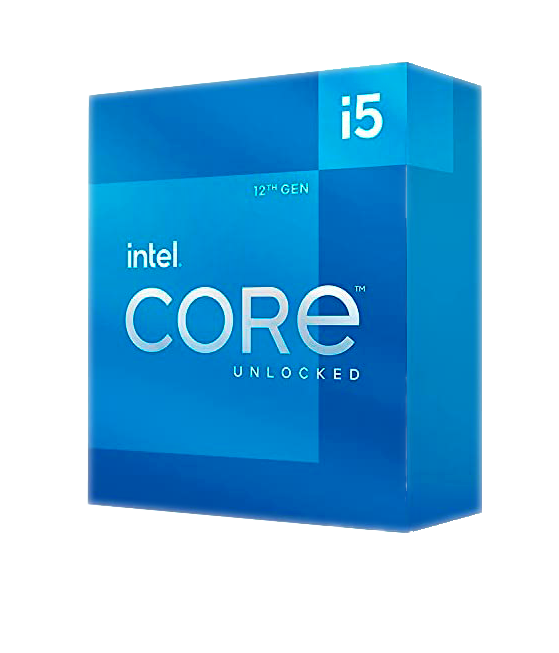

Видеокарты GeForce RTX 3070 — архитектуры NVIDIA RTX 2-го поколения. Они оснащены
улучшенными ядрами для трассировки лучей и тензорными ядрами, новыми потоковыми
мультипроцессорами и высокоскоростной памятью и обеспечивают необходимую мощность даже
для самых требовательных игр.


- процессоры 5 поколения от компании Intel. Получите необходимую производительность,
когда это нужно больше всего. Создавайте, редактируйте и отправляйте контент 4K, а также
наслаждайтесь развлечениями с эффектом погружения благодаря этим процессорам.
Монитор SANC M2444PC - 16:9 монитор казахстанского производства с частотой обновление
144Hz и время отклика на котором менее 1 мс и возможность подключения через Display
Port.